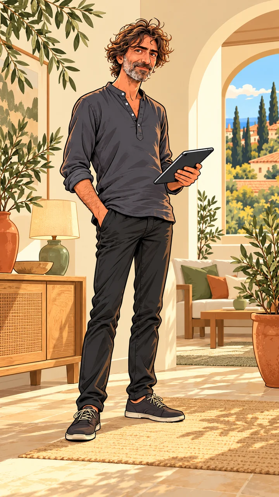
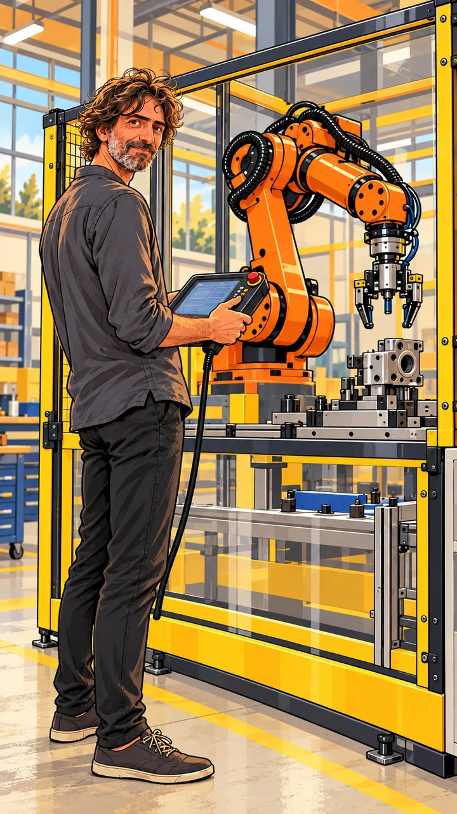
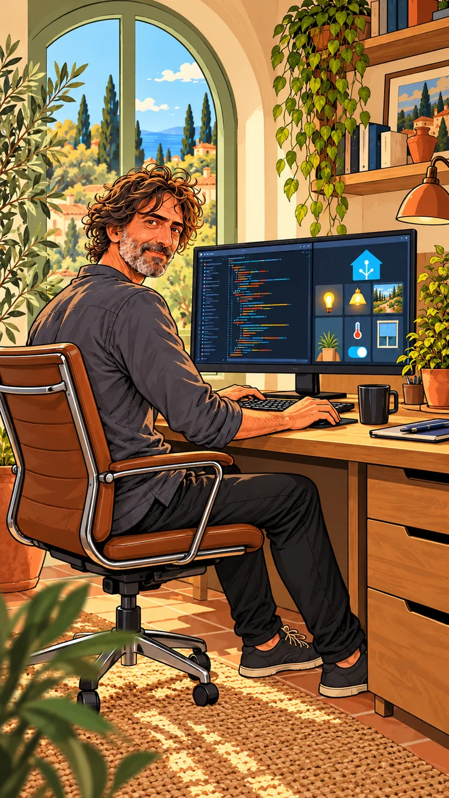

Esperienza tecnica, attenzione alle persone.
Ci piace la tecnologia quando rende più semplici le cose di ogni giorno. Con DomoticaBari portiamo l’esperienza dell’automazione negli ambienti in cui vivi, lavori e accogli i tuoi ospiti.

DomoticaBari nasce da un’idea dell’ing. Alberto Caruso, dalla sua passione per l’informatica e da un’esperienza ventennale nella robotica e nell’automazione industriale.
La curiosità per il mondo open source e per le possibilità della tecnologia ci ha portato a esplorare l’automazione domestica. Abbiamo trovato un modo concreto per mettere quell’esperienza al servizio delle persone: rendere più comodi i gesti quotidiani e collegare dispositivi che, da soli, svolgono funzioni separate.

L’automazione industriale ci ha insegnato a ragionare su segnali, condizioni e sequenze. Portiamo questo metodo nei progetti domestici, partendo da come vengono utilizzati gli ambienti e da ciò che desideri semplificare.
Ascoltiamo le tue abitudini, valutiamo l’impianto e i dispositivi disponibili e definiamo le automazioni adatte. Che si tratti di una casa, di una struttura ricettiva o di soluzioni per l’autonomia, cerchiamo comandi comprensibili e comportamenti coerenti con la vita quotidiana.

Proponiamo Home Assistant come piattaforma per coordinare dispositivi compatibili e costruire automazioni personalizzate. È un progetto open source che permette di riunire luci, clima, accessi e sensori in un sistema configurato intorno alle esigenze degli ambienti.
Privilegiamo le integrazioni locali quando i dispositivi le supportano e verifichiamo la compatibilità prima di definire il progetto.
Controllo locale e privacy
Con dispositivi che supportano il controllo locale, comandi e automazioni possono funzionare nella rete di casa anche senza Internet. Le integrazioni basate su servizi cloud richiedono invece la connessione.
Dispositivi di marche diverse
Possiamo integrare prodotti e protocolli differenti, tra cui Shelly, Philips Hue, Zigbee e KNX, verificando le caratteristiche dei dispositivi e le integrazioni disponibili.
Open source e flessibilità
La community contribuisce allo sviluppo della piattaforma e delle integrazioni. Questo ci permette di costruire configurazioni personalizzate e valutare nuove funzioni nel tempo.
Una casa che funziona
come serve a te.
Raccontaci gli ambienti, le abitudini e le attività che vorresti semplificare. Valuteremo insieme le soluzioni adatte al tuo progetto.